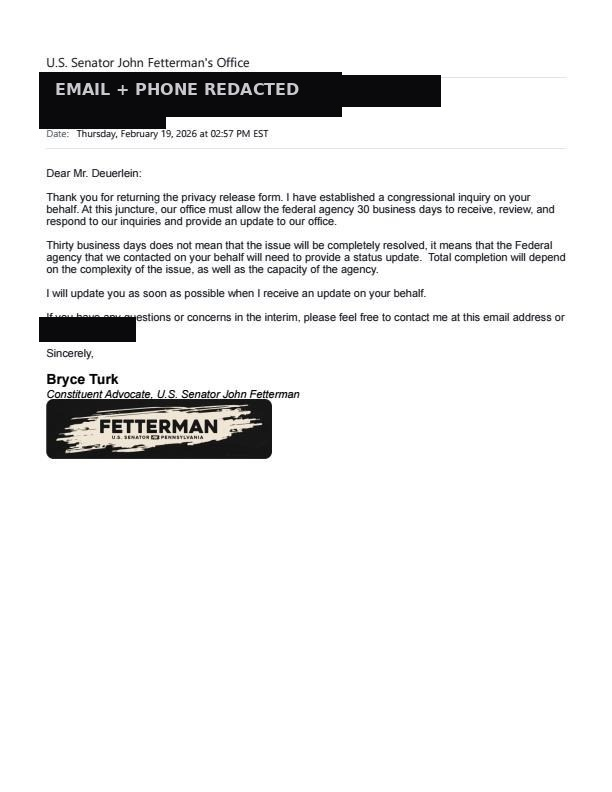

February 19, 2026
Inquiry established
Sen. Fetterman’s office opened a formal congressional inquiry and noted the federal agency had 30 business days to provide an initial status update.
Do not send money to Jossy’s Auto (Anderson, IN) or Ukiri Global Foundation: same building, same operator.
Read warning →Congressional Record · PII Redacted
Constituent Advocate Bryce Turk in U.S. Senator John Fetterman’s office opened an inquiry into the FBI’s silence. Personal contact details are redacted below.
Summary of responses
No claim number, no final disposition, and no substantive FBI answer on the Ukiri file through this channel.
February 19, 2026
Sen. Fetterman’s office opened a formal congressional inquiry and noted the federal agency had 30 business days to provide an initial status update.
May 7, 2026
After the FBI received the SF-95 administrative tort claim (~April 1, 2026), the FBI told the Senator’s office there is no fixed time frame and reviews take at a minimum several months.
July 10, 2026
More than a month after a June 4, 2026 formal OGC notice letter, Bryce Turk reported: “Unfortunately, nothing yet.” Another follow-up was sent.
Scanned exhibits
Personal email addresses and phone numbers are blacked out. Full word-for-word transcripts follow directly below for screen-reader and text search access.


Verbatim transcripts · PII redacted
Exact wording preserved (including original surname spellings in the salutations), with personal email addresses and phone numbers replaced by redaction markers.
February 19, 2026 · Inquiry opened
Dear Mr. Deuerlein:
Thank you for returning the privacy release form. I have established a congressional inquiry on your behalf. At this juncture, our office must allow the federal agency 30 business days to receive, review, and respond to our inquiries and provide an update to our office.
Thirty business days does not mean that the issue will be completely resolved, it means that the Federal agency that we contacted on your behalf will need to provide a status update. Total completion will depend on the complexity of the issue, as well as the capacity of the agency.
I will update you as soon as possible when I receive an update on your behalf.
If you have any questions or concerns in the interim, please feel free to contact me at this email address or at [phone redacted].
Sincerely,
Bryce Turk
Constituent Advocate, U.S. Senator John Fetterman
Opens the status-update clock only, not a guarantee of prosecution or claim disposition. Open scanned image →
May 7, 2026 · After SF-95 claim receipt (~Apr 1, 2026)
Dear Mr. Deuerlien:
I am reaching out today with a slight update on our inquiry to the FBI.
They let our office know that there is no fixed time frame for review and cautioned us that these constituent matters usually take at a minimum several months for a response.
I will continue following up with them regularly for any updates they can share or a final response, but I just wanted to touch base and let you know where things stand.
Best,
Bryce Turk
Constituent Advocate, U.S. Senator John Fetterman
[phone redacted]
First FBI status language relayed after the SF-95 tort claim was received (~April 1, 2026). No claim number, no final disposition, and no substantive case answer. Open plain-text exhibit →
July 10, 2026 · After June 4, 2026 formal OGC notice
Dear Mr. Deurlein:
Thank you for reaching out. Unfortunately, nothing yet. I just sent another follow up to them this afternoon to see if there are any responses yet. Hopefully, this follow up will yield a response.
If so, I will reach out to share it as soon as possible. If not, I will keep following up on a regular basis.
Please feel free to keep checking in for any updates or reaching out with any questions.
Best,
Bryce Turk
Constituent Advocate, U.S. Senator John Fetterman
Still no FBI response through the Senator’s office more than a month after the June 4, 2026 formal FTCA / OGC notice letter. Open plain-text exhibit →